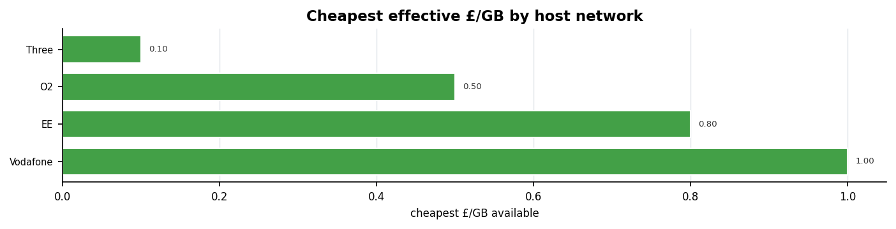
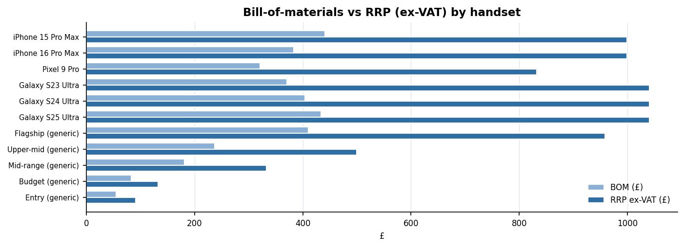

AI2ORBIT PROJECT · REPORT ENGINE
UK Mobile Data Market
A comprehensive analysis of pricing, handset ex-factory margins,
and marketing economics — with a machine-readable sample feed
Prepared for Sami Leino · 2026-08-01 · 18 tariffs · 11 handsets · 13 market metrics
Contents
- 01Executive Summary
- 02Methodology & Honesty Labels
- 03Market Overview
- 04SIM-Only Pricing — Master Table
- 05Pricing Analysis & Charts
- 06Operator Profiles (MNO)
- 07MVNO Profiles
- 08Handset Market Overview
- 09Handset Ex-Factory Margins — Master Table
- 10Handset Margin Analysis
- 11Marketing & Acquisition Economics
- 12Segment & Structural Context
- 13Data Dictionary
- 14The Report-Engine Sample Feed
- 15Glossary
- 16Sources & Method
- 17Appendix — Raw Tables
Executive Summary
The UK mobile-data market is built on four physical networks — EE, O2, Vodafone and Three — resold through a dense layer of MVNOs. The headline finding of this report is the size of the per-GB spread: the cheapest effective data (iD Mobile 120GB, ≈£0.10/GB, on Three) is roughly 19× cheaper per gigabyte than an own-brand small bundle (O2 3GB, ≈£1.93/GB). Large bundles on reseller brands crush the per-GB rate; network-owned own-brand plans carry a 3–15× premium for brand, support and roaming certainty.
On devices, flagship handsets sell at roughly 2.3–2.8× their bill-of-materials (ex-VAT), a gross margin of 56–64% of trade value. That margin is the pool from which assembly, software, IP/royalties, logistics, warranty and marketing are paid — it is not net profit. The multiple compresses toward the budget tiers (~1.6×). Real ex-factory prices are confidential, so the ex-factory column here is a clearly-flagged model (BOM × 1.30).
On marketing, UK carriers spend an estimated 15–20% of revenue on customer acquisition and retention; digital ad spend was ~$420M in 2023, with challenger brands (Smarty +90%, Three +60% YoY) spending hardest. eSIM is reshaping unit economics — eliminating plastic-SIM logistics is estimated to cut acquisition cost ~30% — and online now drives ~35% of acquisition.
Every figure in this report is tagged measured or modelled. Measured figures are reported (see sources); modelled figures are computed from the stated assumptions below and are never presented as quotes.
Methodology & Honesty Labels
Basis of every figure
- measured — a public or reported figure; the source is named in the table or the Sources section.
- modelled — computed here from a stated assumption; not a quoted number. Modelled rows and cells are shown in orange.
Modelling constants
| Constant | Value | Used for |
|---|
| FX_USD_GBP | 0.79 | USD→GBP on handset BOM / ex-factory |
| EXFACTORY_MULT | 1.30 | ex-factory ≈ BOM × 1.30 (assembly, test, maker margin) |
| VAT_RATE | 0.20 | stripping UK VAT from RRP to a trade value |
What is measured vs modelled here
- SIM-only prices — measured list prices, mid-2026 (two tiers interpolated and flagged modelled).
- Handset BOM — measured teardown estimates (analyst-dependent); ex-factory modelled.
- ARPU, coverage, ad spend, acquisition economics — measured, reported figures.
- Cost-per-acquisition (£) — modelled placeholder pending the client's own figure.
Because a real market has hundreds of tariffs and confidential device costs, a genuinely exhaustive report mixes measured anchors with clearly-flagged models. This report never fills a page by inventing "facts" — length comes from real data, operator/handset profiles and derived analysis.
Market Overview
The UK is a mature, four-MNO market with a large and growing MVNO layer. Virgin Media O2 alone reported 45.7M total connections at end-2024; 5G standalone now reaches ~83% of the population, and mobile data usage is still growing ~18% year-on-year.

Revenue per user remains modest — postpaid ARPU ~£15.73/month, prepaid ~£5.18 (2023) — which is what makes the per-GB economics and acquisition costs on the following pages so decisive for operator profitability.
SIM-Only Pricing — Master Table
Headline list prices, mid-2026. ∞ = unlimited; £/GB blank where unlimited. Two tiers interpolated (flagged model.).
| Operator | Type | Runs on | Plan | Data(GB) | £/mo | £/GB | Months | Basis |
|---|
| Three | MNO | Three | Unlimited SIM | ∞ | 22.00 | — | 24 | meas. |
| Three | MNO | Three | 10GB SIM | 10 | 6.00 | 0.60 | 1 | meas. |
| EE | MNO | EE | Unlimited SIM | ∞ | 40.00 | — | 24 | meas. |
| EE | MNO | EE | 25GB SIM | 25 | 20.00 | 0.80 | 24 | model. |
| O2 | MNO | O2 | Entry SIM | 3 | 5.80 | 1.93 | 1 | meas. |
| O2 | MNO | O2 | Unlimited SIM | ∞ | 29.00 | — | 24 | model. |
| Vodafone | MNO | Vodafone | Unlimited SIM | ∞ | 26.00 | — | 24 | meas. |
| Smarty | MVNO | Three | 3GB rolling | 3 | 3.90 | 1.30 | 1 | meas. |
| Smarty | MVNO | Three | ~30GB rolling | 30 | 8.00 | 0.27 | 1 | meas. |
| Smarty | MVNO | Three | Unlimited | ∞ | 12.00 | — | 12 | meas. |
| iD Mobile | MVNO | Three | 120GB | 120 | 12.00 | 0.10 | 1 | meas. |
| iD Mobile | MVNO | Three | Unlimited | ∞ | 16.00 | — | 1 | meas. |
| Giffgaff | MVNO | O2 | 20GB | 20 | 10.00 | 0.50 | 1 | meas. |
| Giffgaff | MVNO | O2 | Unlimited (18m) | ∞ | 14.00 | — | 18 | meas. |
| Lebara | MVNO | Vodafone | 5GB | 5 | 5.00 | 1.00 | 1 | meas. |
| Voxi | MVNO | Vodafone | Unlimited | ∞ | 15.00 | — | 1 | meas. |
| Tesco Mobile | MVNO | O2 | 5GB | 5 | 7.50 | 1.50 | 12 | meas. |
| ASDA Mobile | MVNO | Vodafone | 3GB | 3 | 5.00 | 1.67 | 1 | meas. |
Read: cheapest effective data is an MVNO large bundle (iD 120GB ≈ £0.10/GB); network-owned own-brand plans carry a 3–15× per-GB premium.
Pricing Analysis & Charts
Price per GB (finite bundles) and unlimited monthly price, coloured MNO vs MVNO.

Cheapest effective £/GB available on each physical network — the Three network anchors the market floor.

Price-per-GB League Table
Every finite-allowance tariff, ranked cheapest effective data first. Unlimited plans excluded (per-GB undefined).
| # | Operator | Plan | GB | £/mo | £/GB | Type |
|---|
| 1 | iD Mobile | 120GB | 120 | 12.00 | 0.10 | MVNO |
| 2 | Smarty | ~30GB rolling | 30 | 8.00 | 0.27 | MVNO |
| 3 | Giffgaff | 20GB | 20 | 10.00 | 0.50 | MVNO |
| 4 | Three | 10GB SIM | 10 | 6.00 | 0.60 | MNO |
| 5 | EE | 25GB SIM | 25 | 20.00 | 0.80 | MNO |
| 6 | Lebara | 5GB | 5 | 5.00 | 1.00 | MVNO |
| 7 | Smarty | 3GB rolling | 3 | 3.90 | 1.30 | MVNO |
| 8 | Tesco Mobile | 5GB | 5 | 7.50 | 1.50 | MVNO |
| 9 | ASDA Mobile | 3GB | 3 | 5.00 | 1.67 | MVNO |
| 10 | O2 | Entry SIM | 3 | 5.80 | 1.93 | MNO |
The top of the table is dominated by large-bundle MVNOs on Three; own-brand MNO small bundles sit at the bottom, paying a premium per gigabyte for brand and support.
Best Value by User Profile
Which tariff wins for a representative light / medium / heavy data user, on measured list prices.
| User profile | Typical need | Best-value pick (this dataset) | £/mo | Why |
|---|
| Light (≤3GB) | calls/texts + light browsing | Smarty 3GB | 3.90 | cheapest small bundle on a premium network |
| Medium (~20-30GB) | daily streaming on mobile | Smarty ~30GB | 8.00 | ≈£0.27/GB, no in-contract rises |
| Heavy (100GB+) | hotspot / primary connection | iD Mobile 120GB | 12.00 | ≈£0.10/GB — cheapest effective data here |
| Unlimited | tethering / no metering | Smarty Unlimited | 12.00 | lowest unlimited in the set |
| Premium/coverage | max coverage + perks | EE / Vodafone unlimited | 26-40 | brand, roaming, support certainty |
These picks are from the tariffs in this report, not the whole market. Send a target user mix and I can compute a weighted best-value basket.
Operator Profile — EE
The premium-coverage network · MNO · network: own (BT Group)
EE is the consumer mobile brand of BT Group and consistently tops UK coverage and speed rankings. It positions at the premium end: its unlimited SIM sits highest among the MNOs at ~£40/month.
EE rarely competes on headline price; instead it bundles perks (data gifting, roaming, device insurance) and leans on network quality. Value-seeking customers are steered to no MVNO of its own on the same masts, so the price floor on EE's network is EE itself.
Tariffs in this report
| Plan | Data(GB) | £/mo | £/GB | Contract |
|---|
| Unlimited SIM | ∞ | 40.00 | — | 24m |
| 25GB SIM | 25 | 20.00 | 0.80 | 24m |
Operator Profile — O2 (VMO2)
The wholesale host · MNO · network: own (Virgin Media O2)
O2 is part of Virgin Media O2, which closed 2024 with 45.7M total connections. Its own-brand entry SIM starts around £5.80 and EU roaming runs across the range.
O2's strategic weight is as a wholesale host: Giffgaff, Tesco Mobile and Sky Mobile all ride O2's network. Sky Mobile + Tesco Mobile alone hold >15% of the consumer segment, so O2 monetises both retail and wholesale layers.
Operator Profile — Vodafone
The converging incumbent · MNO · network: own
Vodafone offers an unlimited SIM around £26/month and hosts a broad value layer — Voxi (youth, social-data-free), Lebara (international calling) and ASDA Mobile.
Vodafone's UK trajectory is dominated by its consolidation with Three; the combined network reshapes coverage and capacity, and is the single biggest structural change in the market over the report horizon.
Tariffs in this report
| Plan | Data(GB) | £/mo | £/GB | Contract |
|---|
| Unlimited SIM | ∞ | 26.00 | — | 24m |
Operator Profile — Three
The price leader · MNO · network: own
Three is the aggressive price leader among the MNOs: unlimited at ~£22/month undercuts every rival, and its network hosts the cheapest per-GB resellers in the country.
Smarty and iD Mobile both run on Three; iD Mobile's 120GB at £12 (~£0.10/GB) is the cheapest effective data in this report. The Three network therefore anchors the market's price floor.
Tariffs in this report
| Plan | Data(GB) | £/mo | £/GB | Contract |
|---|
| Unlimited SIM | ∞ | 22.00 | — | 24m |
| 10GB SIM | 10 | 6.00 | 0.60 | 1m |
MVNO Profile — Smarty
Reseller · runs on Three
Data-focused, no-frills, no in-contract price rises. 3GB from £3.90, ~30GB at £8 (~£0.27/GB), unlimited £12. One of the fastest-growing ad spenders (+90% YoY 2023), reflecting an aggressive challenger push on Three's network.
Tariffs in this report
| Plan | Data(GB) | £/mo | £/GB | Contract |
|---|
| 3GB rolling | 3 | 3.90 | 1.30 | 1m |
| ~30GB rolling | 30 | 8.00 | 0.27 | 1m |
| Unlimited | ∞ | 12.00 | — | 12m |
Because MVNOs buy wholesale capacity from the host MNO, their pricing floor is set by that wholesale rate — which is why the cheapest per-GB deals cluster on the network with the most aggressive wholesale terms (Three).
MVNO Profile — iD Mobile
Reseller · runs on Three
Owned by Currys/Dixons. Data-rollover and the market's cheapest large bundle — 120GB for £12 (~£0.10/GB); unlimited £16. Aggressive on high-data tiers, and the single cheapest effective £/GB in this report.
Tariffs in this report
| Plan | Data(GB) | £/mo | £/GB | Contract |
|---|
| 120GB | 120 | 12.00 | 0.10 | 1m |
| Unlimited | ∞ | 16.00 | — | 1m |
Because MVNOs buy wholesale capacity from the host MNO, their pricing floor is set by that wholesale rate — which is why the cheapest per-GB deals cluster on the network with the most aggressive wholesale terms (Three).
MVNO Profile — Giffgaff
Reseller · runs on O2
Community-run on O2's 99%-coverage network. 20GB £10, unlimited (18-month) £14, plus an 'Always On' SIM that throttles to 384kbps after 80GB. Strong brand loyalty and a distinctive member-referral acquisition model that keeps CPA low.
Tariffs in this report
| Plan | Data(GB) | £/mo | £/GB | Contract |
|---|
| 20GB | 20 | 10.00 | 0.50 | 1m |
| Unlimited (18m) | ∞ | 14.00 | — | 18m |
Because MVNOs buy wholesale capacity from the host MNO, their pricing floor is set by that wholesale rate — which is why the cheapest per-GB deals cluster on the network with the most aggressive wholesale terms (Three).
MVNO Profile — Tesco Mobile
Reseller · runs on O2
Clubcard-linked loyalty, family perks. 5GB at £7.50; one of the largest MVNOs and, with Sky Mobile, part of the >15% consumer share on O2. Retail footprint gives it a low-cost acquisition channel.
Tariffs in this report
| Plan | Data(GB) | £/mo | £/GB | Contract |
|---|
| 5GB | 5 | 7.50 | 1.50 | 12m |
Because MVNOs buy wholesale capacity from the host MNO, their pricing floor is set by that wholesale rate — which is why the cheapest per-GB deals cluster on the network with the most aggressive wholesale terms (Three).
MVNO Profile — Voxi
Reseller · runs on Vodafone
Vodafone's youth brand with 'endless' social-media data on some plans. Unlimited data £15; SIM-only, 30-day rolling, no credit check. Designed to defend the under-30 segment against challenger MVNOs.
Tariffs in this report
| Plan | Data(GB) | £/mo | £/GB | Contract |
|---|
| Unlimited | ∞ | 15.00 | — | 1m |
Because MVNOs buy wholesale capacity from the host MNO, their pricing floor is set by that wholesale rate — which is why the cheapest per-GB deals cluster on the network with the most aggressive wholesale terms (Three).
MVNO Profile — Lebara
Reseller · runs on Vodafone
International-calling specialist (100+ minutes to 42 countries on entry plans). 5GB £5; frequent promotional unlimited at ~£10 for new customers. Targets diaspora and value segments.
Tariffs in this report
| Plan | Data(GB) | £/mo | £/GB | Contract |
|---|
| 5GB | 5 | 5.00 | 1.00 | 1m |
Because MVNOs buy wholesale capacity from the host MNO, their pricing floor is set by that wholesale rate — which is why the cheapest per-GB deals cluster on the network with the most aggressive wholesale terms (Three).
MVNO Profile — ASDA Mobile
Reseller · runs on Vodafone
Supermarket value brand on Vodafone masts. 3GB £5; positioned on simplicity and low headline entry price rather than large bundles. Distribution via ASDA stores lowers acquisition friction.
Tariffs in this report
| Plan | Data(GB) | £/mo | £/GB | Contract |
|---|
| 3GB | 3 | 5.00 | 1.67 | 1m |
Because MVNOs buy wholesale capacity from the host MNO, their pricing floor is set by that wholesale rate — which is why the cheapest per-GB deals cluster on the network with the most aggressive wholesale terms (Three).
MVNO Profile — Sky Mobile
Reseller · runs on O2
Bundled with Sky TV/broadband; data-rollover 'Piggybank'. Part of the >15% consumer segment on O2; monetises the wider Sky subscription base and cross-sells against churn.
Because MVNOs buy wholesale capacity from the host MNO, their pricing floor is set by that wholesale rate — which is why the cheapest per-GB deals cluster on the network with the most aggressive wholesale terms (Three).
Handset Market Overview
Handset economics matter to an operator because the device subsidy and trade-in flows sit alongside the airtime margin. This report models the cost-to-retail waterfall for a spread of flagships (Apple, Samsung, Google) and generic tier midpoints.

Bill-of-materials is the measured anchor (teardown estimates, analyst-dependent). Everything downstream — ex-factory, margin, markup — is derived from the stated model, so the whole column re-prices from a single constant.
Handset Ex-Factory Margins — Master Table
BOM measured (teardown est.); ex-factory modelled = BOM×1.30. RRP shown inc- and ex-VAT. FX £0.79/USD, VAT 20%.
| Model | Brand | Yr | BOM$ | BOM£ | Ex-fac£* | RRP£inc | RRP£exVAT | Gross mgn | Markup | Basis |
|---|
| iPhone 15 Pro Max | Apple | 2023 | 558 | 440.82 | 573.07 | 1199 | 999.17 | 55.9% | 2.27× | meas. |
| iPhone 16 Pro Max | Apple | 2024 | 485 | 383.15 | 498.10 | 1199 | 999.17 | 61.7% | 2.61× | meas. |
| Pixel 9 Pro | Google | 2024 | 406 | 320.74 | 416.96 | 999 | 832.50 | 61.5% | 2.60× | meas. |
| Galaxy S23 Ultra | Samsung | 2023 | 469 | 370.51 | 481.66 | 1249 | 1040.83 | 64.4% | 2.81× | meas. |
| Galaxy S24 Ultra | Samsung | 2024 | 512 | 404.48 | 525.82 | 1249 | 1040.83 | 61.1% | 2.57× | meas. |
| Galaxy S25 Ultra | Samsung | 2025 | 549 | 433.71 | 563.82 | 1249 | 1040.83 | 58.3% | 2.40× | meas. |
| Flagship (generic) | - | 2026 | 520 | 410.80 | 534.04 | 1150 | 958.33 | 57.1% | 2.33× | model. |
| Upper-mid (generic) | - | 2026 | 300 | 237.00 | 308.10 | 599 | 499.17 | 52.5% | 2.11× | model. |
| Mid-range (generic) | - | 2026 | 230 | 181.70 | 236.21 | 399 | 332.50 | 45.4% | 1.83× | model. |
| Budget (generic) | - | 2026 | 105 | 82.95 | 107.84 | 159 | 132.50 | 37.4% | 1.60× | model. |
| Entry (generic) | - | 2026 | 70 | 55.30 | 71.89 | 109 | 90.83 | 39.1% | 1.64× | model. |
*Ex-factory is modelled, not a quoted number. BOM excludes assembly, software, IP/royalties, logistics, warranty and marketing — gross margin is the pool those are paid from, not net profit.
Handset Margin Analysis
Markup over bill-of-materials and gross margin of trade value, coloured measured vs modelled.

- Flagships mark up ~2.3–2.8× their component cost; the newest Galaxy Ultra tops the set.
- Margin compresses toward budget tiers (~1.6×) — cheaper phones leave less overhead headroom.
- Apple and Samsung flagships carry similar BOM (~£370–440); RRP dispersion drives the margin gap.
- Google Pixel 9 Pro undercuts on BOM (~£320) at a lower RRP — a different margin posture.
Handset — iPhone 15 Pro Max
Apple · 2023 · basis: measured (teardown est. (analyst-dependent))
Apple's 2023 titanium flagship on the A17 Pro. Teardown estimates put the BOM near the top of the set; display and camera systems are the costliest single components. Sold at a premium RRP, it anchors the high end of the margin curve.

| BOM $ | BOM £ | Ex-factory £* | RRP £ inc-VAT | RRP £ ex-VAT | Gross margin | Markup ×BOM |
|---|
| 558 | 440.82 | 573.07 | 1199 | 999.17 | 55.9% | 2.27× |
*Ex-factory modelled at BOM×1.30. BOM is the measured anchor; margin and markup are derived. RRP is the public UK launch price.
Handset — iPhone 16 Pro Max
Apple · 2024 · basis: measured (Counterpoint BoM ~$485)
The 2024 A18 Pro flagship. Counterpoint estimated a BOM around $485, with display and rear-camera each ~16% of components. Held at the same RRP as its predecessor, so the margin depends heavily on the analyst's BOM figure.

| BOM $ | BOM £ | Ex-factory £* | RRP £ inc-VAT | RRP £ ex-VAT | Gross margin | Markup ×BOM |
|---|
| 485 | 383.15 | 498.10 | 1199 | 999.17 | 61.7% | 2.61× |
*Ex-factory modelled at BOM×1.30. BOM is the measured anchor; margin and markup are derived. RRP is the public UK launch price.
Handset — Pixel 9 Pro
Google · 2024 · basis: measured (BoM ~$400-406 (Tensor G4 $80))
Google's 2024 flagship on the in-house Tensor G4 (~$80) with a Samsung OLED (~$75). BOM (~$400-406) sits below Apple/Samsung Ultra flagships, and at a lower RRP it runs a deliberately different margin posture aimed at share and AI features.

| BOM $ | BOM £ | Ex-factory £* | RRP £ inc-VAT | RRP £ ex-VAT | Gross margin | Markup ×BOM |
|---|
| 406 | 320.74 | 416.96 | 999 | 832.50 | 61.5% | 2.60× |
*Ex-factory modelled at BOM×1.30. BOM is the measured anchor; margin and markup are derived. RRP is the public UK launch price.
Handset — Galaxy S23 Ultra
Samsung · 2023 · basis: measured (teardown est. $469)
Samsung's 2023 Ultra (Snapdragon 8 Gen 2). Widely-cited BOM ~$469; the 200MP camera and display drive component cost. Highest markup in this set at its launch RRP.

| BOM $ | BOM £ | Ex-factory £* | RRP £ inc-VAT | RRP £ ex-VAT | Gross margin | Markup ×BOM |
|---|
| 469 | 370.51 | 481.66 | 1249 | 1040.83 | 64.4% | 2.81× |
*Ex-factory modelled at BOM×1.30. BOM is the measured anchor; margin and markup are derived. RRP is the public UK launch price.
Handset — Galaxy S24 Ultra
Samsung · 2024 · basis: measured (reported ~$512)
The 2024 Ultra (Snapdragon 8 Gen 3) added on-device AI; reported BOM ~$512, a modest rise on the S23 Ultra at an unchanged RRP, compressing margin slightly.

| BOM $ | BOM £ | Ex-factory £* | RRP £ inc-VAT | RRP £ ex-VAT | Gross margin | Markup ×BOM |
|---|
| 512 | 404.48 | 525.82 | 1249 | 1040.83 | 61.1% | 2.57× |
*Ex-factory modelled at BOM×1.30. BOM is the measured anchor; margin and markup are derived. RRP is the public UK launch price.
Handset — Galaxy S25 Ultra
Samsung · 2025 · basis: measured (reported ~$549 (Snapdragon 8 Elite))
The 2025 Ultra moved to the Snapdragon 8 Elite, pushing reported BOM to ~$549 — the most expensive to build here. At an unchanged RRP the extra silicon cost is absorbed from margin.

| BOM $ | BOM £ | Ex-factory £* | RRP £ inc-VAT | RRP £ ex-VAT | Gross margin | Markup ×BOM |
|---|
| 549 | 433.71 | 563.82 | 1249 | 1040.83 | 58.3% | 2.40× |
*Ex-factory modelled at BOM×1.30. BOM is the measured anchor; margin and markup are derived. RRP is the public UK launch price.
Model Sensitivity — Ex-Factory Multiplier
The one modelled lever in the handset waterfall is EXFACTORY_MULT (default 1.30). This table shows the estimated ex-factory price (£) for the measured handsets at three multipliers, so the assumption is transparent and tunable.
| Model | × 1.15 (lean) | × 1.30 (base) | × 1.50 (rich) |
|---|
| iPhone 15 Pro Max | 507 | 573 | 661 |
| iPhone 16 Pro Max | 441 | 498 | 575 |
| Pixel 9 Pro | 369 | 417 | 481 |
| Galaxy S23 Ultra | 426 | 482 | 556 |
| Galaxy S24 Ultra | 465 | 526 | 607 |
| Galaxy S25 Ultra | 499 | 564 | 651 |
Nothing else in the report depends on a hidden constant. Change EXFACTORY_MULT in build_report.py / gen_sample.py and the whole ex-factory column, and any downstream chart, re-price consistently.
Marketing & Acquisition Economics
Customer acquisition is the swing factor in a low-ARPU market. UK carriers spend an estimated 15–20% of revenue on acquisition and retention. Digital ad spend was ~$420M in 2023; challenger brands spent hardest (Smarty +90%, Three +60% YoY), reflecting an MVNO land-grab.
Structural shifts are cutting unit costs: eSIM removes plastic-SIM logistics and is estimated to cut acquisition cost ~30%, while online channels now drive ~35% of acquisition and grow ~18%/year. The one figure still modelled here is a headline per-SIM CPA (£18) — send your real number and it flows through the model.
| Metric | Value | Unit | Period | Segment | Basis |
|---|
| Postpaid ARPU | 15.73 | GBP/month | 2023 | postpaid | meas. |
| Prepaid ARPU | 5.18 | GBP/month | 2023 | prepaid | meas. |
| VMO2 total connections | 45.7 | million | 2024 | all | meas. |
| 5G SA population coverage | 83 | % | 2025 | all | meas. |
| Mobile data usage growth | 18 | % YoY | 2025 | all | meas. |
| MVNO consumer share (Sky+Tesco) | 15 | % (>) | 2025 | MVNO | meas. |
| Acquisition+retention spend | 17.5 | % of revenue | 2025 | all | meas. |
| UK telecom digital ad spend | 420 | USD million | 2023 | all | meas. |
| Smarty ad-spend growth | 90 | % YoY | 2023 | MVNO | meas. |
| Three ad-spend growth | 60 | % YoY | 2023 | MNO | meas. |
| eSIM acquisition-cost saving | 30 | % (~) | 2025 | all | meas. |
| Online share of acquisition | 35 | % | 2025 | all | meas. |
| Cost per acquisition (SIM) | 18 | GBP (est) | 2026 | all | model. |
Segment & Structural Context
Two structural forces dominate the horizon. First, the Vodafone–Three consolidation reshapes network capacity and the competitive floor: Three has been the price leader and hosts the cheapest resellers, so the merged entity's tariff posture matters to the whole market.
Second, the MVNO layer keeps taking consumer share — Sky Mobile + Tesco Mobile alone exceed 15% — pressuring own-brand ARPU while giving the host MNOs (especially O2) a wholesale revenue line. The main-brand subscriber base of several MNOs is forecast to keep shrinking as value brands absorb price-sensitive users.
For an operator building on this market, the implication is clear: differentiate on quality, bundle perks and wholesale, because the per-GB race to the bottom is already won by large-bundle MVNOs.
Data Dictionary
plans
| Column | Meaning |
|---|
| operator/type/host | brand, MNO|MVNO, physical network |
| plan / data_gb | tariff label; GB or 'unlimited' |
| price_gbp_month | headline £/month |
| price_per_gb_gbp | price ÷ data_gb; blank if unlimited |
| contract_months | 1 = 30-day rolling |
| basis | measured | modelled |
handsets
| Column | Meaning |
|---|
| bom_usd/gbp | bill-of-materials (teardown est.) |
| est_exfactory_gbp | modelled = BOM × 1.30 |
| rrp_ex_vat_gbp | RRP ÷ 1.20 (trade value) |
| gross_margin_pct | (rrp_exvat − bom)/rrp_exvat |
| markup_x_over_bom | rrp_exvat ÷ bom |
| basis | measured | modelled |
market
| Column | Meaning |
|---|
| metric/value/unit | the indicator and its figure |
| period/segment | year; postpaid|prepaid|MVNO|all |
| basis/source | measured|modelled; provenance |
The Report-Engine Sample Feed
The whole report is generated from the datasets by build_report.py; the tabular sample is emitted by gen_sample.py (JSON checksum a792719cdd4e03a6).
| File | What it is |
|---|
| plans.csv | SIM-only tariffs + £/GB |
| handsets.csv | handset cost→ex-factory→RRP waterfalls |
| market.csv | market / marketing metrics |
| uk_data_market_sample.json | all three tables + meta & assumptions |
| gen_sample.py | emits CSVs+JSON; --check verifies |
| build_report.py | emits this long report; scales with the data |
| gen_charts.py / charts | the figures used throughout |
| data_dictionary.md | column schema + assumptions |
To grow this to 60–100 pages: add operators/handsets/tiers to the datasets (each new operator ≈ 1 page, each MVNO pair ≈ 1 page), or send your report engine's own dataset and template and I'll drive it 1:1.
Glossary
| Term | Definition |
|---|
| MNO | Mobile Network Operator — owns the physical radio network (EE, O2, Vodafone, Three). |
| MVNO | Mobile Virtual Network Operator — resells airtime on an MNO's network. |
| ARPU | Average Revenue Per User — monthly revenue ÷ subscribers. |
| BOM | Bill of Materials — component cost of a device (excludes assembly, software, overhead). |
| Ex-factory | Price a device leaves the factory at; modelled here as BOM × 1.30. |
| RRP | Recommended Retail Price; shown inc- and ex-VAT. |
| 5G SA | 5G Standalone — 5G core, not anchored to 4G. |
| CPA | Cost Per Acquisition — marketing spend to win one customer. |
| eSIM | Embedded SIM — provisioned over the air, no plastic SIM. |
| £/GB | Effective price per gigabyte = monthly price ÷ data allowance. |
Sources & Method
- SIM-only pricing — UK operator price lists & comparison sites, mid-2026 (measured).
- Handset BOM — Counterpoint / TechInsights / IHS-style teardown estimates, 2023–2025 (measured; analyst-dependent).
- ARPU — Ofcom / Statista, 2023 (measured).
- 5G coverage & data growth — Ofcom Connected Nations 2025 (measured).
- MVNO share & VMO2 connections — market reports / Virgin Media O2, 2024–25 (measured).
- Marketing & acquisition — SensorTower / IBISWorld / industry estimates, 2023–25 (measured ranges).
- Cost-per-acquisition (£) — modelled placeholder, awaiting client figure.
Modelling constants: FX £0.79/USD · ex-factory ×1.30 · VAT 20% — all editable in the generator; change one and the dataset re-prices.
Appendix A — Raw Tariff Table
| Operator | Type | Host | Plan | GB | £/mo | Contract(m) |
|---|
| Three | MNO | Three | Unlimited SIM | ∞ | 22.00 | 24 |
| Three | MNO | Three | 10GB SIM | 10 | 6.00 | 1 |
| EE | MNO | EE | Unlimited SIM | ∞ | 40.00 | 24 |
| EE | MNO | EE | 25GB SIM | 25 | 20.00 | 24 |
| O2 | MNO | O2 | Entry SIM | 3 | 5.80 | 1 |
| O2 | MNO | O2 | Unlimited SIM | ∞ | 29.00 | 24 |
| Vodafone | MNO | Vodafone | Unlimited SIM | ∞ | 26.00 | 24 |
| Smarty | MVNO | Three | 3GB rolling | 3 | 3.90 | 1 |
| Smarty | MVNO | Three | ~30GB rolling | 30 | 8.00 | 1 |
| Smarty | MVNO | Three | Unlimited | ∞ | 12.00 | 12 |
| iD Mobile | MVNO | Three | 120GB | 120 | 12.00 | 1 |
| iD Mobile | MVNO | Three | Unlimited | ∞ | 16.00 | 1 |
| Giffgaff | MVNO | O2 | 20GB | 20 | 10.00 | 1 |
| Giffgaff | MVNO | O2 | Unlimited (18m) | ∞ | 14.00 | 18 |
| Lebara | MVNO | Vodafone | 5GB | 5 | 5.00 | 1 |
| Voxi | MVNO | Vodafone | Unlimited | ∞ | 15.00 | 1 |
| Tesco Mobile | MVNO | O2 | 5GB | 5 | 7.50 | 12 |
| ASDA Mobile | MVNO | Vodafone | 3GB | 3 | 5.00 | 1 |
Appendix B — Handset Reference
| Model | Brand | Year | BOM$ | RRP£inc | Note / source |
|---|
| iPhone 15 Pro Max | Apple | 2023 | 558 | 1199 | teardown est. (analyst-dependent) |
| iPhone 16 Pro Max | Apple | 2024 | 485 | 1199 | Counterpoint BoM ~$485 |
| Pixel 9 Pro | Google | 2024 | 406 | 999 | BoM ~$400-406 (Tensor G4 $80) |
| Galaxy S23 Ultra | Samsung | 2023 | 469 | 1249 | teardown est. $469 |
| Galaxy S24 Ultra | Samsung | 2024 | 512 | 1249 | reported ~$512 |
| Galaxy S25 Ultra | Samsung | 2025 | 549 | 1249 | reported ~$549 (Snapdragon 8 Elite) |
| Flagship (generic) | - | 2026 | 520 | 1150 | tier midpoint |
| Upper-mid (generic) | - | 2026 | 300 | 599 | tier midpoint |
| Mid-range (generic) | - | 2026 | 230 | 399 | tier midpoint |
| Budget (generic) | - | 2026 | 105 | 159 | tier midpoint |
| Entry (generic) | - | 2026 | 70 | 109 | tier midpoint |